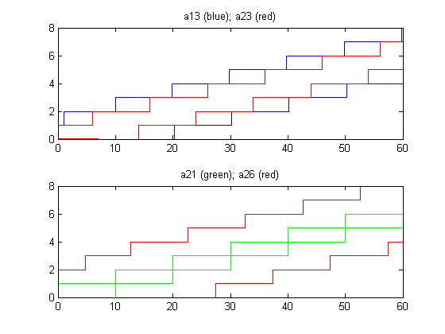

Part 5: A Simple Example of Modular Performance Analysis (MPA)
Contents
Introduction
This part describes a simple example for the modular performance analysis (MPA) of a distributed embedded system. The underlying hardware platform consists of two computing and one communication resource. There are two independent input streams whose events are processed by different tasks. In this part of the tutorial, you will learn how to use the available components in the RTC toolbox in order to determine end-to-end delays and buffer requirements of the sample system. It is supposed that Part 1 - Part 3 of the tutorial have been completed. Part 4 (Using the Java API) is not necessary for the understanding.
At first, a basic version of the system is analyzed. In the last two sections of this tutorial variations of the original example are considered: introduction of a Greedy Processing Component and modelling of a task with 'AND'-activation.
The Sample System
According to the following figure, the sample system consists of two computing resources CPU_1 and CPU_2 as well as a Bus resource.

There are two input streams S1 and S2 which are processed by chains of tasks. For example, the events of stream S1 are first processed by task T1 and the resulting stream is processed by T3. Note that the communication of the intermediate stream through the bus resource is modelled by a communication task C2. Here, we suppose that every task invocation consumes and generates one event. Generalizations for much more general activation schemes, consumption and production rates have been described.

According to the principles of Modular Performance Analysis (MPA), the above system consisting of input streams, tasks and an underlying execution platform is first mapped into a performance network. To this end, one needs to specify the resource sharing strategies that are applied. According to the previous figure, we suppose the following scheduling policies:
- CPU1: The tasks T1 and T4 mapped to CPU1 are scheduled according to EDF (earliest deadline first) with preemption. The remaining task T8 uses background scheduling, i.e. it gets whatever is left from the resource (idle time). * BUS: Here, we suppose that a hierarchical TDMA/FP scheme is adopted similar to the FlexRay protocol. In particular, the resource is periodically for a fixed time assigned to communication task C1. The rest of the time, C5 and C7 can use the bus where higher priority is given to requests from C5. * CPU2: The scheduling applied is FP (fixed priority) with preemption where T3 has highest static priority.
Now, we can determine the performance network that has as elements the GPC (Greedy Processing Component) and EDF (Earliest Deadline First) components.

As can be seen, the timing properties of the input stream S1 are described by the arrival curve a11. In a similar way, S2 is characterized by a21. Tasks T1 and T4 share the CPU1 with service curve b11 by means of EDF scheduling. The execution demands and deadlines for these tasks are e1, e4 and d1, d4, respectively. T8 with execution demand e8 receives the remaining service, i.e. b12.
The performance models for the bus and the second CPU use the GPC component. The service of CPU2 is b31. It is first used to process task T3 with highest priority and then task T6 with lower priority. Therefore, CPU2 implements (preemptive) fixed priority scheduling. The bus service is first distributed to two periodically repeating TDMA-slots with service b21 and b22. The two communication tasks C5 and C7 use the second slot in a fixed priority manner (similar to the well known FlexRay protocol).
Let us first specify the initial arrival and service curves. Input streams S1 and S2 are purely periodic with periods 10 and 3. The processing resources CPU1 and CPU2 are fully available with one resource unit per unit time interval. The bus is scheduled using TDMA (time division multiple access) with period 10. The first time slot has length 2 and serves C2, the second one has the remaining length 8. The normalized bandwidth of the bus is one, i.e. one communication unit per unit time interval:
a11 = rtcpjd(10, 0, 0); a21 = rtcpjd(3, 0, 0); b11 = rtcfs(1); b21 = rtctdma(2,10,1); b22 = rtctdma(8,10,1); b31 = rtcfs(1);
Now we can specify the computation and communication demands e as well as the deadlines d for all computation and communication tasks:
e1 = 2; d1 = 8; e2 = 1; e3 = 6; e4 = 2.2; d4 = 3; e5 = 1; e6 = 1; e7 = 0.5; e8 = 0.1;
The analysis equations corresponding to the performance network can now easily be set up using the available functions rtcedf for an EDF component and rtcgpc for a greedy processing component. One just needs to connect them using the connections as depicted in the performance network. The ordering in which the different components are executed follows a topological sort of the network. In case of dependency cycles (not present in the simple example), one needs to iteratively solve the equations until a fixed point is obtained.
At first we set up the equations for the EDF component with inputs a11, a21 and b11, and outputs a12, a22 and b12. We also determine the delays and buffers associated to tasks T1 and T4:
[a12 del1 buf1 a22 del4 buf4 b12] = rtcedf(a11, e1, d1, a21, e4, d4, b11);
In a similar way, we can determine the equations for all the other GPC components:
[a13 b24 del2 buf2] = rtcgpc(a12, b21, e2); [a14 b32 del3 buf3] = rtcgpc(a13, b31, e3); [a23 b23 del5 buf5] = rtcgpc(a22, b22, e5); [a24 b33 del6 buf6] = rtcgpc(a23, b32, e6); [a25 b25 del7 buf7] = rtcgpc(a24, b23, e7); [a26 b13 del8 buf8] = rtcgpc(a25, b12, e8);
After the analysis, we can now look at some of the results. At a first overview, we may look at some of the arrival and service curves:
subplot(2,1,1); rtcplot(a11,'b', a14, 'r', 60); title('a11 (blue); a14 (red)'); subplot(2,1,2); rtcplot(a21,'b', a26, 'r', 60); title('a21 (blue); a26 (red)');
The plots show the input and output arrival curves of streams S1 and S2, respectively. It becomes obvious that the initial events streams are periodic and deterministic whereas the output streams show a much larger degree of non-determinism: upper and lower curves have a large distance. A closer look at the output arrival curves reveals the minimal distance between two subsequent events as the minimal time interval when the upper curve has value 2. Analogously the maximal distance between two subsequent events is the minimal interval when the lower curve has value 1. In our case we find the interval [6, 24] for the distance of subsequent events in the output stream S1 and the interval [0.1, 42.4] for the distance of subsequent events in the output stream S2, which are of course much larger variances than [10, 10] and [3, 3] for the corresponding input event streams.
subplot(2,1,1); rtcplot(b11,'b', b12, 'r', [0 30 0 10]); title('b11 (blue); b12 (red)'); subplot(2,1,2); rtcplot(b22,'b', b23, 'r', 30); title('b22 (blue); b23 (red)');
The service curve b11 represents the full service available from CPU1 whereas b12 shows that after the EDF scheduler has used resources for tasks T1 and T4, not much is left for the (background) execution of T8 in terms of computing resources. For example, the lower curve of b12 has a first positive value at time interval 8.6. Therefore, it may happen that T8 does not get any processor time within a time interval of 8.6 time units. b22 in the second plot shows the typical TDMA pattern, here with a period of 10 and a busy interval of 8 time units.
Finally, let us compute the end-to-end delays of streams S1 and S2. To this end, we can use a simple approach by just adding the respective delays of the corresponding tasks:
delay1 = del1 + del2 + del3; delay2 = del4 + del5 + del6 + del7 + del8; disp(['delay1 = ', num2str(delay1), '; delay2 = ', num2str(delay2)]);
delay1 = 28; delay2 = 66.2
But we can also make use of the 'pay-bursts-only-once' approach using the capabilities of the function rtcdel. This way, tighter bounds on the end-to-end delays are obtained:
delay1 = del1 + rtcdel(a12, b21, e2, b31, e3); delay2 = del4 + rtcdel(a22, b22, e5, b32, e6, b23, e7, b12, e8); disp(['delay1 = ', num2str(delay1), '; delay2 = ', num2str(delay2)]);
delay1 = 25.6; delay2 = 50
Including a Greedy Shaper
In this section a Greedy Shaper Component (GSC) is added to the system architecture described above. The goal is to limit the influence of event stream S1 on event stream S2 in order to achieve a smaller end-to-end delay for stream S2. In the original system, subsequent close activations of the higher priority task T3 on CPU2 cause long waiting times for task T6, which leads to a large end-to-end delay for stream S2. This effect can be reduced by smoothing out bursts of events that appear at the output of communication task C2. This is done by placing a Greedy Shaper Component in front of task T3.

The following figure shows the adapted performance network with the GSC.

We want to limit the activations of task T3 to at most one every 10 time units. This is done by choosing the upper arrival curve of a periodic stream with P = 10 as shaping curve S1 for the GSC:
s1 = rtcpjdu(10, 0, 0); [a13s del9 buf9] = rtcgsc(a13, s1);
The following plots show the arrival curves for the corresponding event stream before (a13) and after (a13s) the shaper:
subplot(2,1,1); rtcplot(a13,'g', s1, 'k--', [0 60 0 8]); title('a13 (green); s1 (black dashed)'); subplot(2,1,2); rtcplot(a13s,'g', s1, 'k--', [0 60 0 8]); title('a13s (green); s1 (black dashed)');
Now we can recompute the outputs and performance values for the GPC components affected by the change and plot the input and output curves of the streams S1 and S2 again:
[a14 b32 del3 buf3] = rtcgpc(a13s, b31, e3); [a24 b33 del6 buf6] = rtcgpc(a23, b32, e6); [a25 b25 del7 buf7] = rtcgpc(a24, b23, e7); [a26 b13 del8 buf8] = rtcgpc(a25, b12, e8); subplot(2,1,1); rtcplot(a11,'b', a14, 'r--', [0 60 0 8]); title('a11 (blue); a14 (red dashed)'); subplot(2,1,2); rtcplot(a21,'b', a26, 'r', [0 60 0 40]); title('a21 (blue); a26 (red)');
The plots show that thanks to the shaper component the output of event stream S2 is much more regular now. The maximal interarrival time between two events at the output of S2 is now only 24.4 time units, whereas in the original system we observed a maximal interarrival time of 42.4 time units.
Also the end-to-end delay of S2 is considerably reduced (26.2 time units compared to 47 time units in the system without shaper) because of the 'smoothed' higher priority stream in CPU2.
delay1 = del1 + rtcdel(a12, b21, e2, s1, 1, b31, e3); delay1 = del1 + rtcdel(a12, b21, e2, s1, 1, b31, e3); delay2 = del4 + rtcdel(a22, b22, e5, b32, e6, b23, e7, b12, e8); disp(['delay1 = ', num2str(delay1), '; delay2 = ', num2str(delay2)]);
delay1 = 29.6; delay2 = 27.2
Components with Multiple Inputs
In realistic systems, the flow of data between components is typically not limited to one-to-one connections. Rather, the activation of one task often depends on events arriving from multiple other tasks. The activation of the task is then determined as a boolean function of the events on multiple input streams.
In this section we modify the original sample system including a task with two inputs (see following figure). In order to be triggered, the task T3 requires an event on both inputs. This activation scheme is generally referred to as AND-activation. In this modified sample system we also set the periods of the input streams S1 and S2 to the same value (10 time units), since on the long term different periods would lead to the overflow of one event buffer at the input of task T3.

The following figure depicts the performance network of the system. It makes use of an AND-component that models the described task activation type.

At first we adapt the period of input stream S2 as described above and recompute the outputs of the performance components up to the confluence of the two event streams:
a21 = rtcpjd(10, 0, 0); [a12 del1 buf1 a22 del4 buf4 b12] = rtcedf(a11, e1, d1, a21, e4, d4, b11); [a13 b24 del2 buf2] = rtcgpc(a12, b21, e2); [a23 b23 del5 buf5] = rtcgpc(a22, b22, e5);
Then we use the rtcand function to determine the arrival curve at the output of the AND component:
a33 = rtcand(a13,a23);
Now we can compute also the outputs of all the remaining performance components and plot the inputs to the AND component and the system output stream:
[a24 b32 del3 buf3] = rtcgpc(a33, b31, e3); [a25 b25 del7 buf7] = rtcgpc(a24, b23, e7); [a26 b13 del8 buf8] = rtcgpc(a25, b12, e8); subplot(2,1,1); rtcplot(a13,'b', a23, 'r', 60); title('a13 (blue); a23 (red)'); subplot(2,1,2); rtcplot(a11,'g', a26, 'r', 60); title('a21 (green); a26 (red)');
For the computation of the end-to-end delays we have to consider also the delay experienced by the events at the AND component. In particular, in the presence of an AND activation, events might have to wait for their 'partner' event in one of the two input buffers of the AND component. The maximal time spent by an event in such a buffer can be determined by interpreting the arrival curve of the partner event stream as service curve for the own event stream when calling the rtcdel function:
del_and1 = rtcdel(a13, a23, 1); del_and2 = rtcdel(a23, a13, 1);
Finally, we can compute the end-to-end delays for the two event streams:
delay1 = del1 + del2 + del_and1 + rtcdel(a33, b31, e3, b23, e7, b12, e8); delay2 = del4 + del5 + del_and2 + rtcdel(a33, b31, e3, b23, e7, b12, e8); disp(['delay1 = ', num2str(delay1), '; delay2 = ', num2str(delay2)]);
delay1 = 56.2; delay2 = 49
Applications Specified as Marked Graphs
A large class of distributed real-time applications are specified with dataflow graphs. Such examples include signal-, video-, voice-, image-processing applications, control applications, etc. Usually the nodes in the graph correspond to application processes, and the edges to FIFO communication channels between the processes with infinite buffers. A common characteristic of the dataflow graphs is that thay can contain arbitrary cycles which model: either cycles in the event flows between the processes, or finite buffers with blocking write semantics which create backpressure between the processes. MPA can analyze such systems when they are specified as marked graphs.
Let us consider an example system described in the following publications:
N. Stoimenov. Compositional Design and Analysis of Distributed, Cyclic, and Adaptive Embedded Real-Time Systems. Section 4.6.2. PhD Thesis, ETH Zurich, 2011.
Lothar Thiele and Nikolay Stoimenov. 2009. Modular Performance Analysis of Cyclic Dataflow Graphs. In Proceedings of the 9th ACM International Conference on Embedded Software (EMSOFT ’09). ACM, New York, NY, USA, 127–136.
Consider a Wireless LAN application specified with a marked graph which is shown in the following figure.
It is mapped to a multiprocessor platform with 5 independent cores. The communication times between them is considered to be negligble (it can be easily modeled by adding additional nodes to the graph). Processor 5 provides a TDMA schedule which partitions the period into two equal time slices, named 5.1 and 5.2. The TDMA-scheduler in processor 5 is has a period of 0.2ms and equal slot lengths for slices 5.1 and 5.2, i.e. 0.1ms each. Processors 1-4 have speeds of 100 million cycles/sec, while processor 5 provides 200 million cycles/sec. There is a single periodic input to the application at node 1 with a period of 0.2ms. The following table lists the mapping of marked graph nodes to processors, and the number of cycles each of the nodes needs in order to be executed on the respective processor, i.e. the worst-case execution demands.
Let us now see how to compute the end-to-end delays from the input node 1 to all other nodes, the input buffer sizes, the remaining service curves from each node, and the output arrival curves from each node.
clear all; import ch.ethz.rtc.kernel.*;
A marked graph that needs to be analyzed is specified by a set of vectors and matrices.
In order to work with small integers only, the working time unit is tenth of a millisecond.
Specify the services provided by each core in terms of workload units. They are computed from the demands of the nodes and the actual core speeds.
wrate1 = 5; wrate2 = 32; wrate3 = 30; wrate4 = 24; wrate5 = 2.5; wrate6 = 5;
Specify the input stream period
wperiod = 2;
Vector BU contains as elements the upper service curves of each node, i.e.
BU = [ rtcfsu(wrate1); ... rtcfsu(wrate2); ... rtcfsu(wrate3); ... rtcfsu(wrate4) ; ... rtctdmau(1, 2, 2*wrate5); ... rtctdmau(1, 2, 2*wrate6)];
Vector BL contains as elements the lower service curves of each node, i.e.
BL = [ rtcfloor(rtcfsl(wrate1)) ; ... rtcfloor(rtcfsl(wrate2)); ... rtcfloor(rtcfsl(wrate3)) ; ... rtcfloor(rtcfsl(wrate4)) ; ... rtcfloor(rtctdmal(1, 2, 2*wrate5)); ... rtcfloor(rtctdmal(1, 2, 2*wrate6))];
Adjacency matrix C contains as elements the number of inital tokens at the edges, i.e. if there is no edge from node i to j, and if there is an edge from i to j with initial tokens.
C = [[Inf Inf 1 Inf 2 1 ]; ... [0 Inf Inf Inf Inf Inf]; ... [Inf 0 Inf Inf Inf Inf]; ... [Inf Inf 0 Inf Inf Inf]; ... [Inf Inf Inf 0 Inf Inf]; ... [0 Inf Inf Inf Inf Inf]];
THE INPUT IS SUPPOSED TO BE AT NODE 1
IN = rtcpjd(wperiod,0,0); INU = IN(1); INL = IN(2);
Consider separately LOWER and UPPER Matrices
Each matrix is separated into two matrices: one containing only curves and one containing only scalars (representing the tokens).
LOWER MATRICES
Now we build the Min-Plus Adjacency Matrices:
sc = size(C); AL(sc(1),sc(2)) = rtcfsl(0); %initialization of the Java array ALC(sc(1),sc(2)) = 0; %initialization of the constant array
for i = (1:sc(1)) for j = (1:sc(2)) if (C(i,j) == Inf) AL(i,j) = Curve([[0 Inf 0]]); ALC(i,j)= Inf; else AL(i,j) = BL(i); ALC(i,j) = C(i,j); end end end
Build the inhomogeneous part of the fixed point equation:
DL = BL;
Determine Min Closure of matrix (A + AC)
n = 4; % 2^n iterations
[ALS ALSC] = rtcmatminclos(AL, ALC, n);
Determine resulting RL = ALS * DL
RL = rtcmatminconv(ALS, DL, ALSC);
UPPER MATRICES
Now we build the Min-Plus Adjacency Matrices:
sc = size(C); AU(sc(1),sc(2)) = rtcfsu(0); %initialization of the Java array AUC(sc(1),sc(2)) = 0; %initialization of the constant array
for i = (1:sc(1)) for j = (1:sc(2)) if (C(i,j) == Inf) AU(i,j) = Curve([[0 Inf 0]]); AUC(i,j)= Inf; else AU(i,j) = BU(i); AUC(i,j) = C(i,j); end end end
Build the inhomogeneous part of the fixed point equation:
DU = BU;
Determine min closure of (A + AC)
[AUS AUSC] = rtcmatminclos(AU, AUC, n);
Determine resulting RU = AUS * DU
RU = rtcmatminconv(AUS, DU, AUSC);
DETERMINE DELAYS, BUFFERS, REMAINING SERVICES, and OUTPUT ARRIVAL CURVES
Determine transfer functions from the input to all node outputs Linear Part: TL{UL}; Constant Part: TC{UL}.
TL{UL}(i) and TC{UL}(i) correspond to node i. Note that we suppose that node 1 is the input node! The constant part (h) is just the autonomous arrival function
TCU = RU; TCL = RL;
The linear part beta is given by the convolution of the service curve of node 1 (as this is the input) and the corresponding element of the closure matrix AUS/AUSC and ALS/ALSC
[TLL TLLC] = rtcmatminconv(ALS(:,1), BL(1), ALSC(:,1)); [TLU TLUC] = rtcmatminconv(AUS(:,1), BU(1), AUSC(:,1));
Determine Delay and Buffer spaces
if length(TLU) > 1 for i = 1:length(TLU) Delay(i)= max(rtch(INU, TLL(i)), rtch(INU, TCL(i))); Buffer(i)= max(rtcv(INU, TLL(i)), rtcv(INU, TCL(i))); end else Delay(1) = rtch(INU, TLL(1)); Buffer(1) = rtcv(INU, TLL(1)); end
Delay Buffer
Delay =
0.2000 0.2313 0.2646 0.3062 1.5062 1.3000
Buffer =
1 1 1 1 1 1
AOU and AOL are vectors that contain the output arrival curves from each node
BUO and BLO are vectors that contain the remaining services from each node
At first, determine the effective service for each output:
BeffU = TLU; for i = 1:length(TLU) BeffL(i) = rtcmin(TLL(i), TCL(i)); end
Now, determine the output arrival curves:
for i = 1:length(TLU) AOU(i) = rtcmin(rtcmindeconv(rtcminconv(INU, BeffU(i)), BeffL(i)), BeffU(i)); AOL(i) = rtcmin(rtcminconv(rtcmindeconv(INL, BeffU(i)), BeffL(i)), BeffL(i)); end
Finally, determine the remaining service:
for i = 1:length(TLU) BOU(i) = rtcmaxdeconv(rtcminus(BU(i), AOL(i)), 0); BOL(i) = rtcmaxconv(rtcminus(BL(i), AOU(i)), 0); end
VISUALIZING OUTPUTS
AOU = rtcceil(AOU); scrsz = get(0,'ScreenSize'); figure('Position',[1 scrsz(4)/1.5 scrsz(3)/4 scrsz(4)/1.5]) rtcmatplot(AOU, 10, 'AOU');
figure('Position',[1 scrsz(4)/1.5 scrsz(3)/4 scrsz(4)/1.5]) rtcmatplot(BOL, 10, 'BOL');